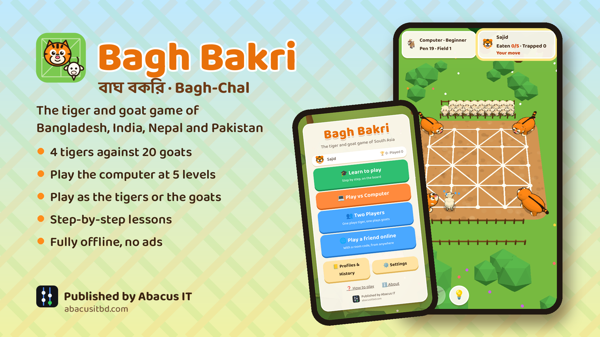
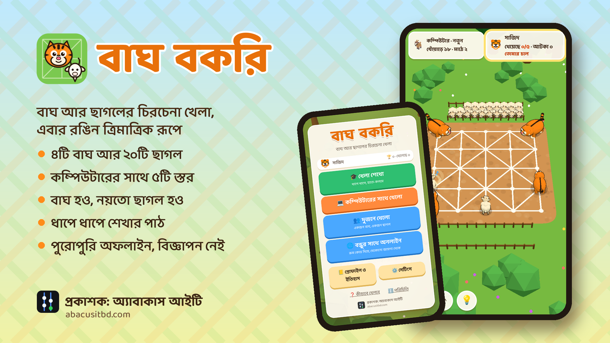
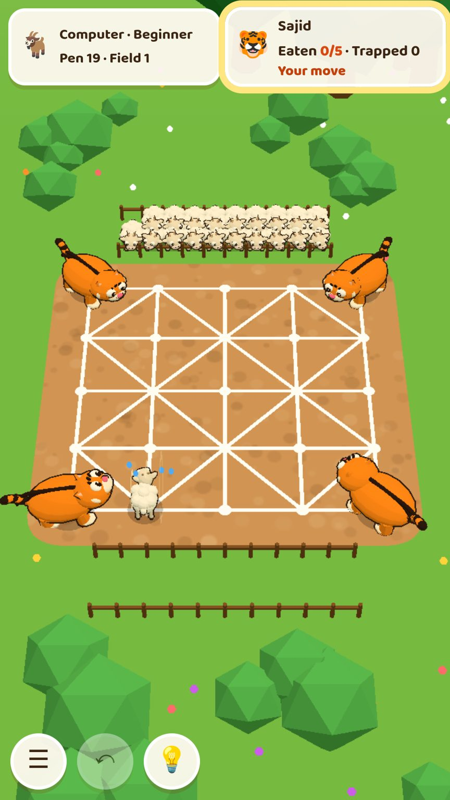
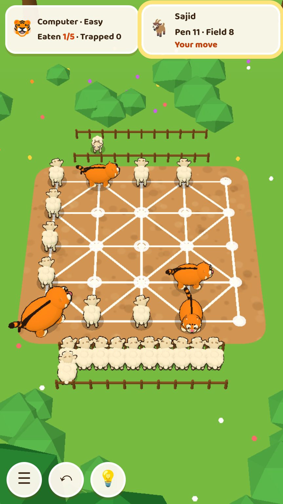
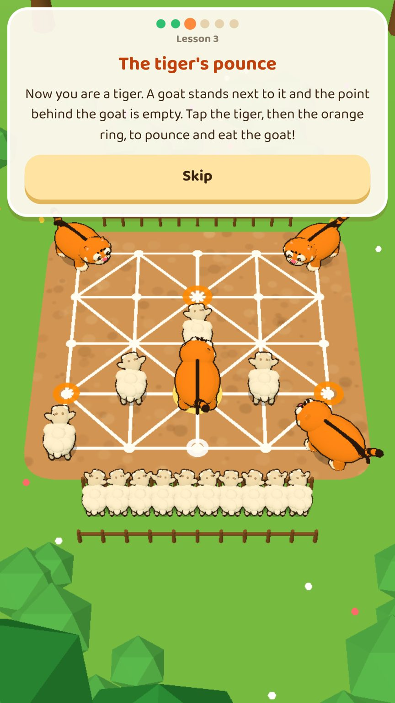
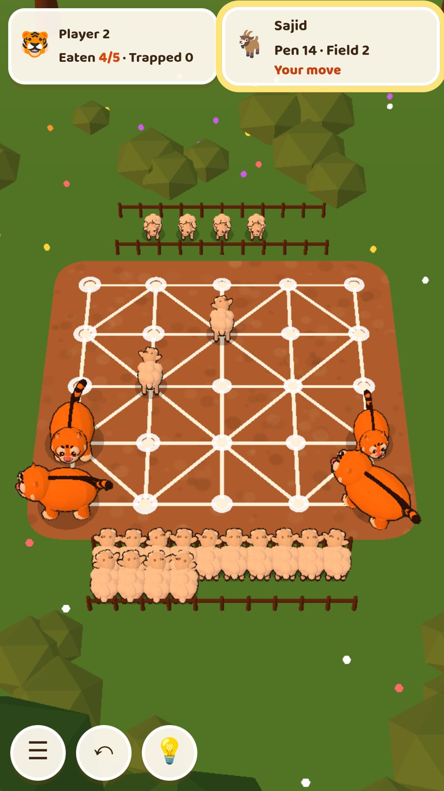
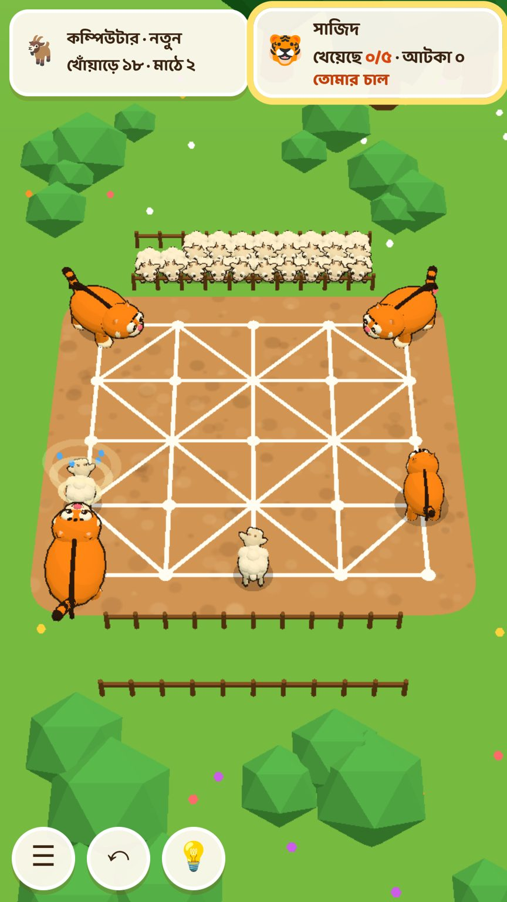
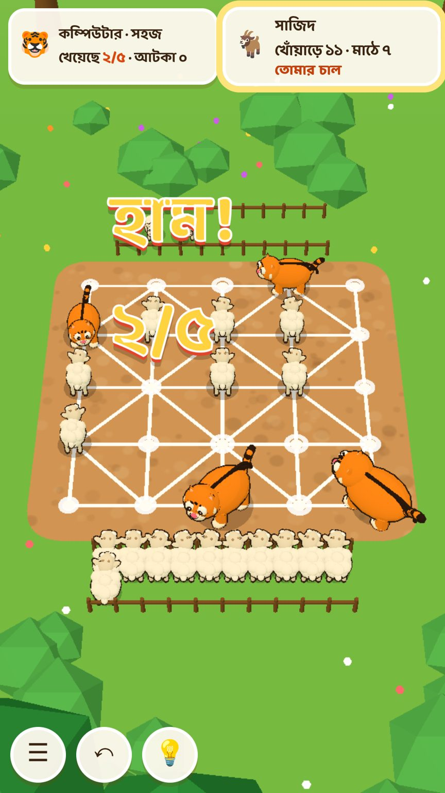
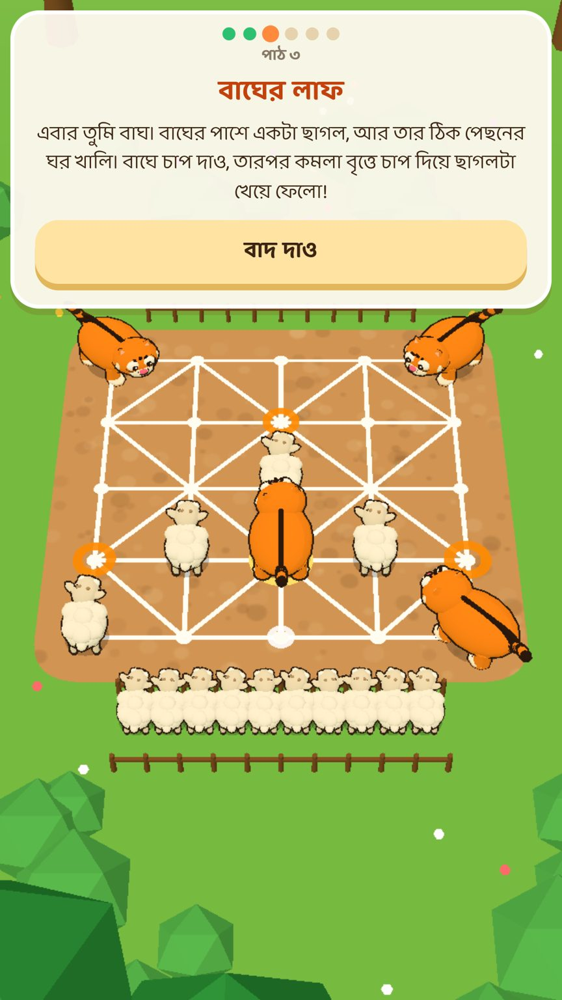
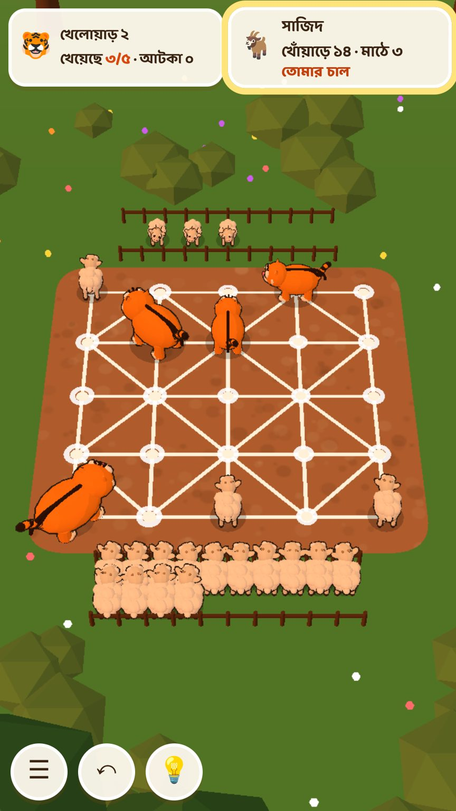

বাঘ বকরি · Bagh-Chal · the tiger and goat game of South Asiaবাঘ আর ছাগলের চিরচেনা খেলা, রঙিন ত্রিমাত্রিক রূপে










Bagh Bakri (also called Bagh-Chal, Bagh Bandi, Wagh Bakri, Sher Bakri, Aadu Puli Aattam or Tigers and Goats) is the old hunt game of Bangladesh, India, Nepal, Pakistan and Sri Lanka, played for centuries on lines drawn in village courtyards and carved into temple stones.
The goats come onto the board one by one, then move along the lines. A tiger moves one step, or jumps over a goat next to it, to the empty point behind, and eats it. The tigers win by eating 5 goats. The goats win by surrounding the tigers so that no tiger can move.
বাঘ বকরি (বাঘবন্দী, বাঘ-ছাগল) বাংলাদেশ, ভারত, নেপাল আর পাকিস্তানের চিরচেনা খেলা। উঠোনে দাগ কেটে, মন্দিরের পাথরে খোদাই করে কিংবা কাঠের বোর্ডে শত শত বছর ধরে এই খেলা চলে আসছে।
ছাগলগুলো একটা একটা করে বোর্ডে আসে, তারপর দাগ ধরে চলে। বাঘ এক ঘর চলে, অথবা পাশের ছাগলের ওপর দিয়ে পেছনের খালি ঘরে লাফ দিয়ে ছাগলটা খেয়ে ফেলে। ৫টি ছাগল খেলে বাঘ জেতে। বাঘদের এমনভাবে ঘিরে ফেলো যেন কোনো বাঘ আর নড়তে না পারে, তাহলে ছাগল জিতবে।
Also known as: bagh bakri, baghbakri, bag bakri, bagh bokri, bag bokri, bagh chal, bagh-chal, baghchal, bagh bandi, bagh bondi, bagh chhagol, wagh bakri, sher bakri, aadu puli aattam, puli meka, huli kuri, tigers and goats, tiger and goat game, lambs and tigers, hunt game, desi board game, bangladesh, india, nepal, pakistan, sri lanka, বাঘ বকরি, বাঘবন্দী, বাঘ ছাগল, बाघ बकरी, बाघचाल, बाघ चाल, बाघ बंदी, शेर बकरी, वाघ बकरी, باگھ بکری, شیر بکری, باگھ چال, વાઘ બકરી, ਬਾਘ ਬੱਕਰੀ, ବାଘ ଛେଳି, ஆடு புலி ஆட்டம், పులి మేక, ಹುಲಿ ಕುರಿ ಆಟ, ആടുപുലിയാട്ടം, කොටි සහ එළුවන්